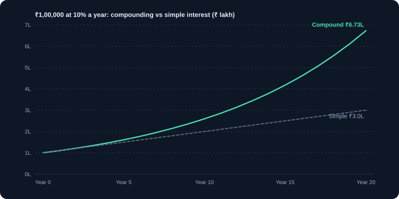
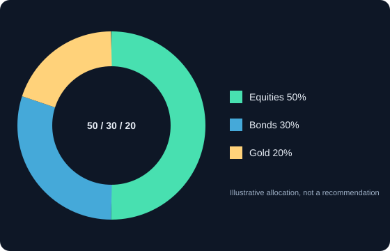

निवेश और धन निर्माण
लक्ष्य तय करें, समय-सीमा समझें, विविधीकरण करें और चक्रवृद्धि को वर्षों तक काम करने दें।
1. निवेश क्यों ज़रूरी है?
बचत खाते में पड़ा पैसा कीमतें बढ़ने पर अपनी क्रय शक्ति खोता है। अगर महँगाई 6% सालाना है, तो एक साल बाद ₹1,00,000 की क्रय शक्ति लगभग ₹94,000 रह जाती है। निवेश का लक्ष्य समय के साथ महँगाई से ज़्यादा कमाना है, ताकि पैसा अपनी क्रय शक्ति बनाए रखे और बढ़े। निवेश जल्दी अमीर बनने का नाम नहीं; यह सालों में काम करने वाली योजना है।
- महँगाई: सामान्य कीमतों में बढ़ोतरी। यह चुपचाप घटाती है कि आपका पैसा क्या ख़रीद सकता है।
- रिटर्न: किसी निवेश पर लाभ या हानि, आमतौर पर सालाना प्रतिशत में।
- जोखिम: असली परिणाम उम्मीद से अलग होने की संभावना, जिसमें पैसे का नुकसान भी शामिल है।
2. लक्ष्य और समय-सीमा से शुरुआत
हर निवेश फ़ैसला दो सवालों पर टिका है: पैसा किसलिए है, और कब चाहिए? इनके जवाब तय करते हैं कि आप कितना जोखिम उठा सकते हैं। 2 साल के लक्ष्य को सुरक्षित एसेट चाहिए, क्योंकि पैसा निकालने से ठीक पहले बाज़ार गिरे तो नुकसान हो सकता है। 15 साल के लक्ष्य में ज़्यादा शेयर रखे जा सकते हैं, क्योंकि गिरावट से उबरने का समय है।
- अल्पकालिक (3 साल से कम): इमरजेंसी पैसा, वाहन की डाउन पेमेंट। फ़िक्स्ड डिपॉज़िट, लिक्विड या डेट फ़ंड जैसे कम जोखिम वाले विकल्प।
- मध्यम अवधि (3 से 7 साल): घर की डाउन पेमेंट, बच्चे की स्कूल फ़ीस। डेट और इक्विटी का संतुलित मिश्रण आम है।
- दीर्घकालिक (7 साल या ज़्यादा): रिटायरमेंट, बच्चे की उच्च शिक्षा। लंबी अवधि में इक्विटी ने ऐतिहासिक रूप से ज़्यादा रिटर्न दिया है, रास्ते में बड़े उतार-चढ़ाव के साथ।
3. पहले नींव: इमरजेंसी फ़ंड और बीमा
ग्रोथ के लिए निवेश से पहले ख़ुद को सुरक्षित करें। इमरजेंसी फ़ंड आपको अचानक खर्च के लिए बुरे समय पर निवेश बेचने से बचाता है। स्वास्थ्य और टर्म बीमा एक ऐसी घटना से परिवार और योजना को बचाते हैं जो वर्षों की बचत मिटा सकती है।
- इमरजेंसी फ़ंड: 3 से 6 महीने के ज़रूरी खर्च, बचत खाते, लिक्विड फंड या फ़िक्स्ड डिपॉज़िट में। इसे निवेश से अलग रखें।
- स्वास्थ्य बीमा: अस्पताल के खर्च के लिए, ताकि निवेश बेचना न पड़े।
- टर्म बीमा: अगर परिवार आपकी आय पर निर्भर है, तो मृत्यु होने पर वह एकमुश्त रकम देता है। यह केवल सुरक्षा है, निवेश नहीं।
- निवेश से पहले ऊँचे ब्याज वाला कर्ज़ (जैसे क्रेडिट कार्ड बैलेंस) चुकाएँ, क्योंकि उसका ब्याज अक्सर उस रिटर्न से ज़्यादा होता है जिसकी आप उम्मीद करते हैं।
4. कंपाउंडिंग: समय सबसे ज़्यादा क्यों मायने रखता है
कंपाउंडिंग का मतलब है कि रिटर्न अपना भी रिटर्न कमाता है। शुरू के कुछ सालों में असर छोटा लगता है, फिर तेज़ी से बढ़ता है। पैसा जितना लंबे समय तक लगा रहे, वृद्धि का उतना ही बड़ा हिस्सा कमाई से आता है, लगाई गई रकम से नहीं।
उदाहरण: 10% सालाना पर ₹1,00,000, 10 साल में लगभग ₹2.59 लाख और 20 साल में लगभग ₹6.73 लाख, टैक्स, शुल्क और महँगाई से पहले। अतिरिक्त दस साल बिना नई रकम जोड़े ₹4 लाख से ज़्यादा जोड़ते हैं। रिटर्न गारंटीड नहीं है; यह उदाहरण है।
5. एसेट क्लास: हर एक क्या करता है
एसेट क्लास एक समूह है जिसके निवेश एक जैसा व्यवहार करते हैं। पोर्टफ़ोलियो में हर एक की अलग भूमिका है।
- इक्विटी (शेयर): कंपनियों में स्वामित्व। लंबी अवधि में सबसे ज़्यादा ग्रोथ की संभावना, छोटी अवधि में सबसे ज़्यादा उतार-चढ़ाव।
- डेट (बॉन्ड, फ़िक्स्ड डिपॉज़िट, डेट फंड): ब्याज के लिए पैसा उधार देना। उतार-चढ़ाव कम, लंबी अवधि की ग्रोथ कम, पर ब्याज अनुमानित (क्रेडिट जोखिम के अधीन)।
- सोना: अनिश्चितता के समय बचाव के रूप में। इसकी कीमत लंबे समय तक स्थिर रह सकती है।
- नकद और लिक्विड फंड: इमरजेंसी और छोटी अवधि की ज़रूरत के लिए। बहुत कम ग्रोथ, बहुत आसान उपलब्धता।
- रियल एस्टेट: बड़ी और कम लिक्विड एसेट। बड़ी पूँजी चाहिए, और बेचने में लागत और समय लगता है।
6. विविधीकरण और एसेट एलोकेशन
विविधीकरण पैसे को बाँटता है ताकि एक ख़राब निवेश पूरी योजना न डुबोए। एसेट एलोकेशन यह तय करना है कि पैसा एसेट क्लास के बीच कैसे बँटे। ज़्यादातर पोर्टफ़ोलियो में यही सबसे बड़ा फ़ैसला होता है, अलग-अलग शेयर चुनने से भी बड़ा।
उदाहरण: 60% इक्विटी और 40% डेट का बँटवारा इक्विटी गिरावट का असर घटाता है। अगर इक्विटी 20% गिरे और डेट 3% बढ़े, तो पोर्टफ़ोलियो 0.6 × 20 − 0.4 × 3 = 10.8% गिरता है, 20% नहीं। आँकड़े उदाहरण हैं।
7. रीबैलेंसिंग: योजना को पटरी पर रखना
समय के साथ जो एसेट ज़्यादा बढ़ता है, वह पोर्टफ़ोलियो का बड़ा हिस्सा बन जाता है, और बिना फ़ैसला किए आपका जोखिम बढ़ जाता है। रीबैलेंसिंग का मतलब है जो बढ़ा उसका थोड़ा बेचना और जो गिरा उसे ख़रीदना, ताकि लक्ष्य वाला बँटवारा वापस मिले। साल में एक-दो बार यह काफ़ी है।
- पहले लक्ष्य वाला बँटवारा तय करें, जैसे 60% इक्विटी और 40% डेट।
- साल में एक-दो बार या जब बँटवारा लगभग 5 प्रतिशत बिंदु खिसके, तब जाँचें।
- रीबैलेंसिंग के टैक्स असर हो सकते हैं। बेचने से पहले टैक्स मॉड्यूल के नियम देखें।
8. निवेश कैसे शुरू करें: चरण दर चरण
- लक्ष्य, राशि और समय-सीमा एक पंक्ति में लिखें।
- इमरजेंसी फ़ंड बनाएँ और बुनियादी बीमा लें।
- समय-सीमा के अनुसार एसेट मिश्रण चुनें।
- सरल, कम लागत वाले, विविध फंड या ऐसे शेयर चुनें जो आप समझते हैं। पहले फ़ैक्टशीट या सालाना रिपोर्ट पढ़ें।
- SIP या हर महीने तय ट्रांसफ़र से नियमित निवेश करें, ताकि आदत बिना प्रयास चले।
- साल में एक-दो बार समीक्षा करें। एक हफ़्ते की ख़बर से योजना न बदलें।
9. आम निवेश गलतियाँ
- अगले एक-दो साल में चाहिए वाला पैसा निवेश करना।
- पिछले साल के सबसे अच्छे प्रदर्शन के पीछे भागना, बिना यह पूछे कि वह क्यों अच्छा रहा।
- गिरावट में SIP रोक देना, जबकि तब सबसे सस्ती यूनिट मिलती हैं।
- सारा पैसा एक शेयर, एक सेक्टर या अपनी कंपनी के शेयर में लगाना।
- ऐसे उत्पादों के लिए ऊँची फ़ीस देना जो आपको चाहिए नहीं या समझ नहीं आते।
- गारंटीड रिटर्न के वादों पर भरोसा करना। कोई वैध उत्पाद शेयरों से निश्चित ऊँचे रिटर्न का वादा नहीं करता।
10. प्रगति कैसे नापें
अपनी योजना को लक्ष्य से जाँचें, किसी दोस्त के रिटर्न या एक महीने की ख़बर से नहीं। निवेश की गई राशि, मौजूदा वैल्यू और लक्ष्य की प्रगति पर नज़र रखें। अपने पोर्टफ़ोलियो की तुलना उसके मिश्रण से मेल खाते बेंचमार्क से कुछ सालों में करें।
चार्ट और चित्र


कार्य उदाहरण
आज कितना निवेश करना होगा
लक्ष्य है 5 साल में ₹10 लाख, और सालाना 10% रिटर्न की उम्मीद है। आज की ज़रूरी रकम 10,00,000 ÷ 1.1⁵ = 10,00,000 ÷ 1.6105 ≈ ₹6,20,921 है। ज़्यादातर काम कंपाउंडिंग करती है।
एक शेयर बनाम मिला-जुला पोर्टफ़ोलियो
पोर्टफ़ोलियो A पूरी तरह एक शेयर में है, जो 40% गिरता है: कुल नुकसान 40%। पोर्टफ़ोलियो B में 50% इंडेक्स फंड (−20%), 30% बॉन्ड (+2%) और 20% सोना (+5%) है। परिणाम: 0.5×(−20) + 0.3×2 + 0.2×5 = −8.4%। विविधीकरण नुकसान सीमित करता है।
वास्तविक परिस्थितियाँ
निवेश शुरू करने के बाद बाज़ार 30% गिरे
अगर आपका लक्ष्य 10 साल दूर है, तो निवेश जारी रखने से कम कीमत पर ज़्यादा यूनिट मिलती हैं, जो लंबी अवधि में मदद कर सकता है। अगर यह पैसा आपको अगले साल चाहिए, तो वही गिरावट घाटे में बिक्री करवा सकती है। आपकी समय-सीमा तय करती है कि प्रतिक्रिया कैसी हो।
कोई दोस्त 25% गारंटीड रिटर्न का वादा करे
इक्विटी रिटर्न की गारंटी नहीं होती। निश्चित ऊँचे रिटर्न का वादा धोखाधड़ी की आम चेतावनी है। पैसा भेजने से पहले जाँचें कि संस्था SEBI-पंजीकृत है या नहीं।
उपयोग के मामले
- रिटायरमेंट योजना: जल्दी शुरू करें और लंबी समय-सीमा को बाज़ार के उतार-चढ़ाव सहने दें।
- बच्चे की शिक्षा का फ़ंड: लक्ष्य की तारीख़ नज़दीक आने पर धीरे-धीरे सुरक्षित एसेट में ले जाएँ।
- इमरजेंसी फ़ंड: 3 से 6 महीने का खर्च नकद या लिक्विड फंड में रखें, निवेश से अलग।
मुख्य बातें
- निवेश चुनने से पहले लक्ष्य और समय-सीमा तय करें।
- कंपाउंडिंग किसी एक योगदान के आकार से ज़्यादा बाज़ार में बिताए समय को पुरस्कृत करती है।
- एसेट और सेक्टरों में पैसा बाँटें, ताकि एक ख़राब निवेश का असर कम हो।
- समय-समय पर संतुलन करें और गारंटीड रिटर्न के वादों से सावधान रहें।
मुख्य शब्द, समझाए गए
- कंपाउंडिंग (चक्रवृद्धि)
- ऐसा रिटर्न जो समय के साथ अपना भी रिटर्न कमाता है, इसलिए वृद्धि तेज़ होती है।
- विविधीकरण
- किसी एक निवेश के नुकसान का असर घटाने के लिए पैसा अलग-अलग निवेशों में बाँटना।
- एसेट एलोकेशन
- लक्ष्य और जोखिम के आधार पर पैसे को इक्विटी, डेट, सोना और नकद जैसी एसेट श्रेणियों में बाँटना।
- इमरजेंसी फ़ंड
- 3 से 6 महीने के खर्च के लिए नकद या बहुत सुरक्षित, तुरंत उपलब्ध बचत। इसे निवेश से अलग रखें।
- महँगाई (इन्फ़्लेशन)
- समय के साथ सामान्य कीमतों में वृद्धि, जो आपके पैसे की क्रय शक्ति घटाती है।
- अस्थिरता (वोलैटिलिटी)
- कीमत कितनी और कितनी तेज़ी से बदलती है। ज़्यादा अस्थिरता का मतलब दोनों दिशाओं में बड़े उतार-चढ़ाव।
सीखने वालों के सामान्य प्रश्न
निवेश शुरू करने का सही समय कब है?
जैसे ही आपके पास इमरजेंसी फ़ंड और साफ़ लक्ष्य हो। आमतौर पर बाज़ार में बने रहने का समय, सही एंट्री पॉइंट खोजने से ज़्यादा मायने रखता है।
एकमुश्त रकम लगाएँ या मासिक किश्तों में?
दोनों तरीके काम कर सकते हैं। मासिक निवेश से गिरावट से ठीक पहले सब कुछ लगाने का जोखिम घटता है। एकमुश्त रकम को बाज़ार स्थिर बढ़े तो ज़्यादा समय मिलता है। वह तरीका चुनें जिस पर आप टिके रह सकें।
विविधीकरण के लिए कितने शेयर चाहिए?
कोई तय संख्या नहीं है। विविधीकरण कंपनियों, सेक्टरों और एसेट प्रकारों में बाँटने से आता है। एक ही सेक्टर के कई शेयर रखना बहुत विविध नहीं होता।
केवल शैक्षिक सामग्री, निवेश सलाह नहीं। बाज़ार में जोखिम होता है, जिसमें पूँजी खोने का जोखिम भी शामिल है। उदाहरण सरल किए गए हैं और इनमें शुल्क, टैक्स या स्लिपेज शामिल नहीं हो सकते।